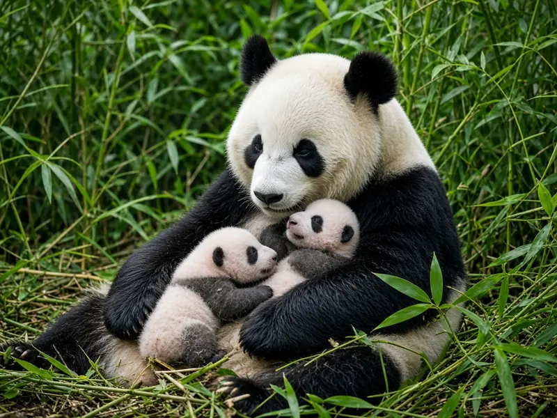
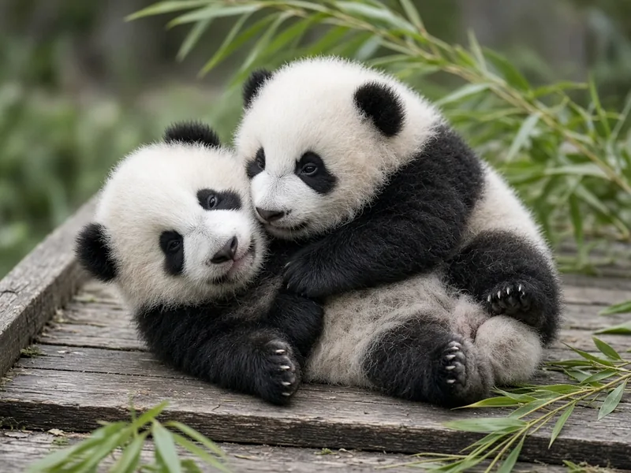

Do giant pandas have twins?
Yes, giant panda mothers conceive twins surprisingly often, roughly half the time by some counts. The catch is raising them. A newborn cub is so small and helpless that a mother can really only care for one at a time, so for most of panda breeding history the second twin was simply left to die. Modern zoos changed that with a hands on technique called twin swapping, and survival of the "extra" twin now approaches 95 percent.

How often do giant pandas have twins?
Smithsonian's National Zoo and Conservation Biology Institute, which has bred several sets of panda twins, says giant pandas give birth to twins approximately 50 percent of the time. Research backs that up with slightly different numbers depending on the sample. A 2018 genetic study published in Twin Research and Human Genetics reports that twins account for 54 percent of all captive births, citing an earlier Chinese survey of breeding records (Qiao et al. 2018). A newer analysis of 324 captive breeding events, published in 2025 in the journal Animals, found a slightly lower figure: 152 twin births out of 324, or 46.9 percent, against 51.9 percent single cubs and 1.2 percent triplets (Luo et al. 2025). Either way, a twin birth is close to a coin flip, not a rarity.
Are panda twins identical?
No, at least not in the sample tested so far. Fraternal, or dizygotic, twins come from two eggs fertilised separately. Identical, or monozygotic, twins come from one fertilised egg that splits into two embryos. Researchers at the China Conservation and Research Center for the Giant Panda used ten genetic markers to test 43 panda twin pairs and found discordant genotypes in every single one, meaning none were identical (Qiao et al. 2018). The authors suggest this may be linked to delayed implantation, the long pause before a fertilised panda egg attaches to the uterus wall, which may leave little opportunity for an early embryo to split cleanly in two. Our article on giant panda pregnancy length explains delayed implantation in more detail.
Why most mothers raise only one cub
A newborn giant panda cub is extraordinarily small and underdeveloped, as we explain in why are baby pandas so small, and it depends on almost constant contact with its mother for warmth, nursing and stimulation in its first weeks. A long term study of eight captive mothers and 21 cubs found that female giant pandas with twins only ever had one cub with them at a time, never both together, and that cubs born to mothers with twins were more vocal and needed more nursing time than single cubs (Snyder et al. 2016). Historically that meant one twin, usually the smaller or weaker one, was left out in the cold. The 2018 genetic study notes that natural rejection of the second twin produced a historic neonatal mortality rate around 60 percent for the rejected cub (Qiao et al. 2018).

Twin swapping: how both cubs now survive
Keepers at the Chengdu Research Base of Giant Panda Breeding first applied a technique called twin swapping in 1990, according to a joint conservation project page from Adventure World and the Chengdu base (Adventure World and Chengdu Research Base). One cub stays with the mother to nurse while its twin rests in a warmed incubator, and staff rotate the cubs back and forth every few hours or days so each one gets a turn at the mother's milk and body warmth. The 2018 genetic study credits this routine with lifting twin cub survival to roughly 95 percent, up from the historic 60 percent mortality rate for the discarded twin (Qiao et al. 2018). Smithsonian's National Zoo uses a version of the same approach, which it calls its Giant Panda Twin Hand Rearing protocol, rotating cubs between an incubator and the mother so both get maternal contact.
A mother who raised twins alone
Swapping needs a lot of staff time, so researchers have long wondered whether any panda mother could simply raise twins herself. In 2016, the female Yang Yang at Vienna Zoo in Austria gave birth to twin cubs, a male named Fu Ban and a female named Fu Feng, and kept both of them without any human help or incubator swapping. A 2018 study compared her behaviour during that denning period with two earlier single cub births and found she rested less and spent more of her day interacting with, nursing and holding the twins than the other mothers had with their lone cubs (Heiderer et al. 2018). The authors describe it as the first documented case of a giant panda mother successfully rearing twins entirely on her own in captivity, and a possible model for future twin births elsewhere.
Giant panda twins at a glance
| Twin birth rate, captive pandas | About 47 to 54 percent of births, depending on the study (Qiao et al. 2018; Luo et al. 2025) |
|---|---|
| Identical twin pairs found | 0 of 43 tested pairs; all were fraternal (Qiao et al. 2018) |
| Historic survival of the second twin, no help | About 40 percent (around 60 percent mortality) (Qiao et al. 2018) |
| Survival with modern twin swapping | About 95 percent (Qiao et al. 2018) |
| Mothers known to raise twins fully unaided | At least one on record: Yang Yang, Vienna Zoo, 2016 (Heiderer et al. 2018) |
| Triplet births | Rare, about 1.2 percent of litters in one 324 event sample (Luo et al. 2025) |
Do wild panda twins happen too?
Almost everything above comes from zoos, because wild panda births are extremely hard to observe, usually hidden deep in a mountain den. Long term radio tracking of wild females in the Qinling Mountains of China followed four radio collared mothers from 1989 to 1996 and recorded nine litters totalling ten cubs, a pattern consistent with the occasional twin litter alongside mostly single births (Wang, Zhu and Pan 2004). A separate study of six wild Qinling mothers in the same period documented detailed den behaviour and cub growth but does not give a wild twinning rate (Zhu et al. 2001). Researchers generally assume wild mothers face the same limits captive mothers do and can realistically raise only one cub at a time, but confirmed, fully documented wild twin litters remain rare in the published record. For more on how wild mothers care for their cubs, see our panda behavior guide and conservation overview.
Key takeaways
- Giant panda twins are common, making up roughly 47 to 54 percent of captive births.
- Every panda twin pair tested so far has been fraternal, not identical.
- A mother can usually care for only one newborn cub at a time, so without help the second twin often did not survive.
- Modern twin swapping between mother and incubator now gets both cubs through to about 95 percent survival.
- At least one mother, Yang Yang at Vienna Zoo, has raised twins entirely by herself.
Frequently asked questions
How often do giant panda mothers have twins?
Often. Smithsonian's National Zoo says giant pandas give birth to twins about 50 percent of the time. A 2018 genetic study in Twin Research and Human Genetics put the captive twinning rate at 54 percent of births, and a 2025 analysis of 324 captive breeding events found 46.9 percent were twins, 51.9 percent were single cubs and 1.2 percent were triplets.
Are giant panda twins identical?
Apparently not. Researchers tested 43 twin pairs at a major Chinese breeding center using genetic markers and found zero identical, or monozygotic, pairs. Every twin pair tested was fraternal, meaning it came from two separately fertilised eggs rather than one egg splitting in two (Qiao et al. 2018).
Why does a giant panda mother usually raise only one cub?
A newborn cub is tiny and needs near constant body contact, nursing and warmth, and panda mothers struggle to do that for two cubs at once. Captive studies describe mothers holding only one cub at a time, even when both are present, and a historic study linked natural rejection of the second twin to a neonatal mortality rate of about 60 percent (Qiao et al. 2018; Snyder et al. 2016).
How do zoos help both panda twins survive?
Many breeding centers use a method called twin swapping. Keepers alternate the two cubs between the mother and an incubator every few hours or days, so each cub gets time nursing and bonding with its mother while the other is kept warm and fed by staff. The technique, pioneered at the Chengdu Research Base in 1990, has pushed twin cub survival up to roughly 95 percent (Qiao et al. 2018).
Has a giant panda mother ever raised twins completely on her own?
Yes, at least once on record. In 2016 the female Yang Yang at Vienna Zoo in Austria raised twin cubs Fu Ban and Fu Feng herself, with no human assistance and no swapping. A 2018 study found she rested less and interacted with her twins more than two other mothers had with single cubs, which the researchers called the first documented unassisted twin rearing in captivity (Heiderer et al. 2018).
Do wild giant pandas have twins too?
Probably, though wild data are limited because so few births are observed. Long term radio tracking of wild females in China's Qinling Mountains recorded nine litters and ten cubs from four mothers between 1989 and 1996, consistent with the occasional twin litter, but wild twin births are rarely documented in detail (Wang, Zhu and Pan 2004).
Sources
- Qiao, M., Zhou, Y., Connor, T., Li, R., Tang, D., Zhang, H. and Ran, J. (2018), Diagnosing zygosity in giant panda twins using short tandem repeats, Twin Research and Human Genetics 21(6): 480 to 485. DOI 10.1017/thg.2018.59
- Snyder, R. J., Perdue, B. M., Zhang, Z., Maple, T. L. and Charlton, B. D. (2016), Giant panda maternal care: a test of the experience constraint hypothesis, Scientific Reports 6: 27509. DOI 10.1038/srep27509
- Heiderer, M., Westenberg, C., Li, D., Zhang, H., Preininger, D. and Dungl, E. (2018), Giant panda twin rearing without assistance requires more interactions and less rest of the mother: a case study at Vienna Zoo, PLOS ONE 13(11): e0207433. DOI 10.1371/journal.pone.0207433
- Luo, Y., Yang, Z., Zhou, X., Li, D., Lai, L., Zeng, C. et al. (2025), Exploring Captive Giant Panda Reproduction: Maternal and Offspring Factor Correlations from 324 Breeding Events, Animals 15(8): 1182. DOI 10.3390/ani15081182
- Wang, D., Zhu, X. and Pan, W. (2004), Life history traits and reproduction of giant pandas in the Qinling Mountains of China, in Lindburg, D. and Baragona, K. (eds), Giant Pandas: Biology and Conservation, University of California Press, 81 to 87. DOI 10.1525/california/9780520238671.003.0007
- Smithsonian's National Zoo and Conservation Biology Institute: A second cub is born (giant panda twin hand rearing protocol)
- Adventure World and the Chengdu Research Base of Giant Panda Breeding, joint project for the conservation of giant pandas: World's first simultaneous twin raising in captivity
- Zhu, X., Lindburg, D. G., Pan, W., Forney, K. A. and Wang, D. (2001), The reproductive strategy of giant pandas (Ailuropoda melanoleuca): infant growth and development and mother infant relationships, Journal of Zoology 253(2): 141 to 155. DOI 10.1017/S0952836901000139
Cite this page
APA
PandasWise. (2026, November 2). Do giant pandas have twins? https://pandaswise.com/blog/do-giant-pandas-have-twins.html
MLA
"Do giant pandas have twins?" PandasWise, 2 Nov. 2026, https://pandaswise.com/blog/do-giant-pandas-have-twins.html.
Chicago
PandasWise. "Do giant pandas have twins?" PandasWise. November 2, 2026. https://pandaswise.com/blog/do-giant-pandas-have-twins.html.